Mar Profundo
0 Metros
0 METROS DE PROFUNDIDADE

Peixe-boi

Salmão do Atlântico

Baixo listrado

Coral chifre de veado

Sardinha europeia
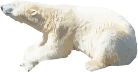Urso Polar

Peixe Palhaço


Tang Azul

Caranguejo de veludo

Bacalhau do Atlântico

Cação espinhoso
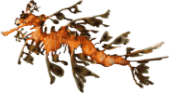Dragão Marinho Folhado
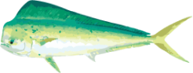Mahi-mahi
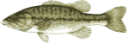Baixo manchado
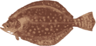Linguado
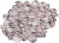Craca
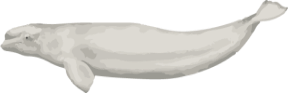Baleia beluga
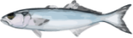anchova

Grande Barracuda
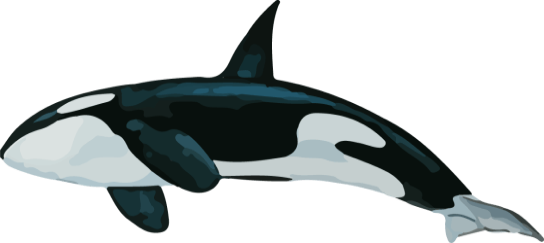Orca
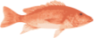Rainha Pargo
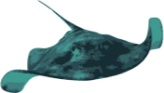Arraia Pelágica
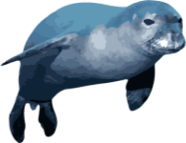Leão Marinho
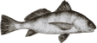Tambor Preto
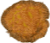Leptoseris
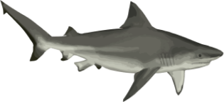Tubarão Touro
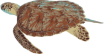Tartaruga Marinha Verde
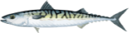Cavala do Atlântico
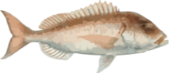Dentex
The Twilight Zone - A Zona Crepuscular
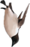Murre de bico grosso
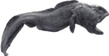Enguia Lobo
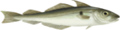o eglefim
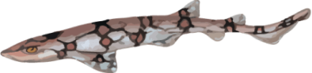Cadeia de tubarão-gato
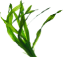Kelp
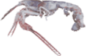Lagosta Garra Terrível
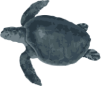Tartaruga Marinha Olive Ridly
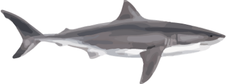Grande Tubarão Branco
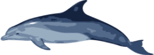golfinhos-nariz-de-garrafa
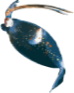Lula Cacatua
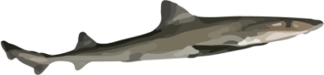Tubarão de goma
A 332 METROS, ESTE É O MAIS PROFUNDO QUE QUALQUER HUMANO JÁ MERGULHO. DEFINIDO POR AHMED GABR EM 2014.
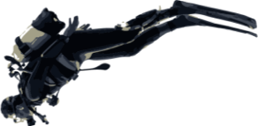Humano
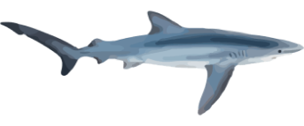Tubarão Azul
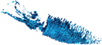Lula vaga-lume
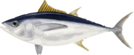Atum Patudo
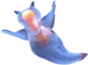anjo do mar
Anjos do mar são lesmas marinhas majestosas que usam asas para se impulsionarem.
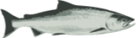salmão chinook
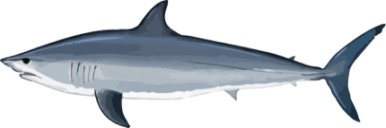Tubarão Mako
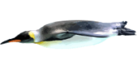Pinguim Imperador
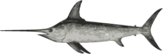Peixe-espada
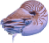Náutilo
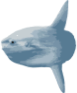 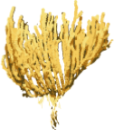
O caranguejo-aranha japonês é o maior caranguejo conhecido, com envergadura máxima de 3,8 m.
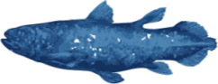Os celacantos eram considerados extintos até serem encontrados vivos em 1938.
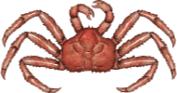 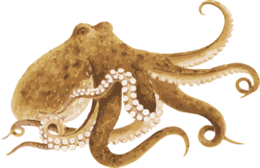 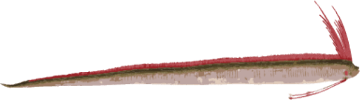O peixe-remo gigante pode crescer até 11 m de comprimento.
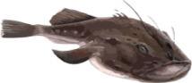 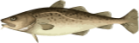 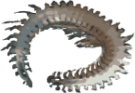 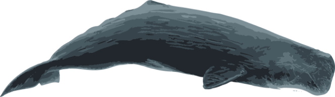 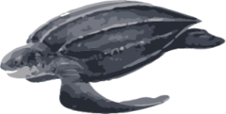As tartarugas marinhas de couro são as espécies de tartarugas marinhas mais antigas.
The Midnight Zone - A Zona da meia-noite
Nenhuma luz solar é capaz de atingir essa profundidade.
Muitas criaturas do fundo do mar criam luz elas próprias - também conhecida como bioluminescência.
Anglerfish have a large bioluminescent lure used to attract prey in the darkness.
O Orange Roughy pode viver até 200 anos. A vida marinha profunda geralmente tem expectativa de vida prolongada.
Os tubarões-duendes são conhecidos como “fósseis vivos” porque são os únicos seres vivos espécie de uma linhagem que existe há 125 milhões de anos.
Muitas espécies de águas profundas usam a cor vermelha como camuflagem, pois é a primeira cor para sair do espectro à medida que você se aprofunda.
Os vermes tubulares gigantes obtêm seus nutrientes das fontes hidrotermais.
As fontes hidrotermais são formadas a partir da passagem da água do mar rochas vulcânicas extremamente quentes. Eles liberam metais pesados que são tóxicos para a maioria dos animais.
Mas mesmo nessas condições extremas a vida especializada encontra um caminho para sobreviver.
Os caranguejos Yeti vivem em fontes hidrotermais.
Os tubarões Sixgill passam o dia em águas profundas e a noite em águas rasas. Eles podem ser encontrados em todo o mundo.
Os narvais mergulham até essa profundidade até 15 vezes por dia em busca de alimento.

Telescope Octopus são quase completamente transparentes e têm olhos salientes únicos.
As refeições são raras no fundo do mar. As criaturas do fundo do mar adaptaram-se a isto - uma delas Isópode gigante em cativeiro ficou cinco anos sem comer.
Lulas Colossais são as maiores espécies de lulas conhecidas. Eles podem atingem 10 metros de comprimento e pesam até 700 kg.
É uma lula ou um verme? É um verme.
Os engolidores negros podem engolir peixes inteiros - mesmo aqueles muito maiores do que eles próprios!
O caracol escamoso recebe esse nome devido às placas de ferro em seu pé e a casca de ferro que ele faz de sulfeto de ferro.
Lulas vampiro comem neve marinha - orgânica material que cai de águas mais rasas.
Frango sem cabeça são pepinos do mar com barbatanas em forma de asas que lhes permitem nadar.

As baleias de bico de Cuvier são os mamíferos que mergulham mais profundamente.
Este tubarão tira pedaços em forma de biscoito de suas presas.
Esta é a profundidade média do oceano.
Mas em alguns lugares é mais profundo.
Muito mais profundo.
Em 14 de abril de 1912, o Titanic afundou até seu local de descanso final em um profundidade de 3.800 metros.
A Toothfish da Patagônia possui proteínas anticongelantes em seus tecidos para evitar congelamento em temperaturas abaixo de zero.